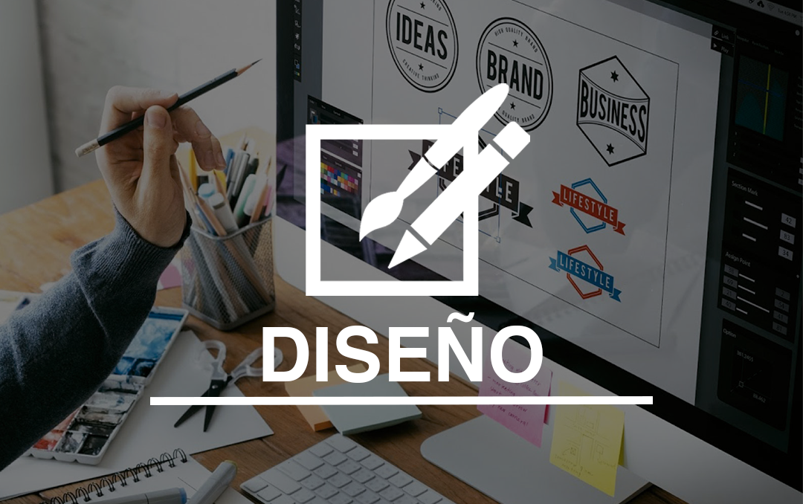

El área de diseño está encargada de la proyección de la imagen corporativa a partir de la creación de
logos,
maquetación de páginas web y diseño editorial, plasmando en cada uno de ellos su creatividad
para obtener un
impacto visual en los usuarios
Nuestras Herrameintas

ADOBE ILUSTRATOR
Es un editor de gráficos vectoriales que se usa mayormente para la creación de logos y maquetación de páginas Web o aplicaciones móviles.

ADOBE PHOTOSHOP
Es un editor de imágenes, Usado principalmente para la ilustración y el retoque de fotografías y gráficos
ADOBE INDESING
Es un maquetador destinado para el diseño editorial, por ejemplo:
- Libros
- Periódicos
- Revistas
- Catálogos
- Manuales